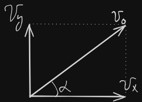

Связанные темы
Зависимость вертикальной координаты от времени при движении под углом к горизонту:
Где:
— высота тела над нулевым уровнем в момент времени t м,
h — начальная высота тела над нулевым уровнем (над произвольным уровнем отсчета) м,
— начальная скорость тела м/с
α — угол, под которым бросили тело ,
t — время движения тела с,
g — ускорение свободного падения м/с^2.
Зависимость горизонтальной координаты от времени при движении под углом к горизонту:
S(t) – путь, пройденный телом за время t м
Угол между вектором скорости тела и горизонтом в любой момент времени может быть выражен из геометрических соображений как:

Где:
— угол между скоростью и горизонтом в момент времени t [°],
— вертикальная проекция скорости тела в момент времени t м/с.
— горизонтальная проекция скорости тела м/с.
Работа силы тяжести при падении тела на тот же уровень, с которого тело взлетело (с Земли на Землю, с балкона на балкон и т.д.) равна нулю.
В этом случае выполняется симметрия полета:
- угол, под которым тело упадет, равен углу, под которым тело бросили
- Скорость, с которой тело упадет, равна скорости, с которой тело бросили
- Время взлета тела до максимальной высоты равно времени падания с неё обратно.
Если работа силы тяжести не равна нулю (бросок с Земли на балкон, с балкона на Землю и так далее), симметрия полета не выполняется.
Важные выводимые формулы движения под углом к горизонту:
Время взлета на максимальную высоту:
Выводится из уравнения изменения скорости тела от точки взлета до верхней точки траектории в проекции на ось Oy, поскольку в верхней точке траектории .
Дальность полета тела:
Выводится с помощью подставления прошлой формулы в уравнения равномерного движения вдоль горизонтальной оси: полета.
Здесь используются формула синуса двойного угла и свойство симметрии полета: время взлета равно времени падения, или полное время движения равно удвоенному времени взлета:
Формула применима только при падении тела на тот же уровень, с которого оно взлетело.
Время падения тела при броске горизонтально:
Формула выводится при проецировании уравнения координаты при равноускоренном движении на ось Oy:
с учетом, что проекция начальной скорости на эту ось равна нулю, а конечная координата — тоже ноль (и начальная координата тоже равна нулю):
Максимальная высота подъема тела над Землей:
Формула получается объединением уравнения координаты при равноускоренном движении на ось OY с поверхности Земли:
с формулой времени подъема тела на максимальную высоту:
Полный вывод:
Все представленные выше формулы могут быть использованы без вывода в задачах первой части, но в задачах второй части за это будут снимать баллы.